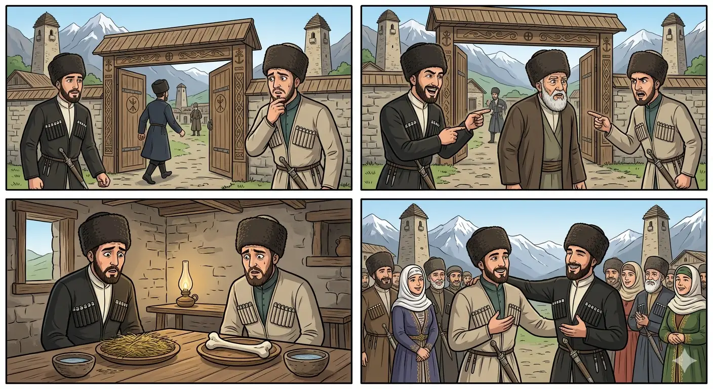

И.А. Дахкильгов. Хьехаме дувцарш - поучительные рассказы-притчи.
И.А. Дахкильгов. Хьехаме дувцарш - поучительные рассказы-притчи. Из ингушского фольклора.

Сий дайта ха деза
ТӀехьабаьккха Ӏовдала бегаш беш хиннав цхьан хана ши доттагӀа. Цхьанахьа чубийхаб уж. ДӀаэттача, цаӀ волавенна цагӀа чу вахав, цу цӀенца ше хьакхаштагӀа хиларах. ШоллагӀавар коанаӀарга сецав. Чуваьнначунга фусам-дас хаьттад, хьа доттагӀа ара хӀана сецав. Жоп деннад: "Ше фу де деза а ца ховш, цхьа бежан дар из-м", - аьннад. Фусам-да араваьннав. ШоллагӀа вола хьаьша чувоалавеш, цунга а хаьттад цо: "Хьо ара а вита чу хӀана венав хьа доттагӀа?" Вокхо жоп деннад: "Ше жӀала хилар бахьан долаш". Хаьший шуна хайшача, цхьаннена оаркхо чу йол йиллай, вокханна йиллай тӀехк. Шоай дог ца хойташ, арабаьннаб доттагӀий, тӀаккха шоайла дагабаьннаб. Фусам-да ала веннар дика кхетадаьд цар. Циггач чӀоагӀо яьй доттагӀаша: хӀанзарчул тӀехьагӀа вай воаех дикадар мара арг ма дац, аьнна. Шоай дош чакхдоаккхаш дӀабахаб уж. "Хьои, хьои магӀавала", - наха юкъе оалаш, - "Изи, изи хьалмагӀа ваккха", - оалаш, - "Цул дикагӀа къонах вац", - оалаш, геттар вӀаший хестош хиннаб уж. Цар шоайла дечунга хьежжа нах а баьлар цар сий де.
РУССКИЙ
Надо заставить себя уважать
Когда-то жили двое друзей. Они были очень привязаны друг к другу, но вместе с тем они едко вышучивали один другого. Как-то их позвали в гости. Когда они подошли к воротам хозяина, один из друзей прямиком пошел в дом, оставив на улице своего друга. Вошедшего хозяин дома спросил, почему его друг стоит у ворот, не входит в дом, на что тот ответил: "Да он - безмозглая и безгласная скотина, не знающая, куда и зачем ей идти!" Затем хозяин вышел, чтобы завести второго друга, и по дороге спросил его, почему его друг вошел в дом, а он остался на улице. Тот ответил: "Хотя вошедший к тебе и считается моим другом, но на самом деле - он собака, так как не знает, куда идти в гости, кого вести или не вести за собою". Сели за стол эти двое друзей. Одному в тарелку хозяин положил клок сена, другому - кость. Друзья переглянулись, ничего не сказали, встали и вышли. Из взаимных вопросов они выяснили, кто кого кем обозвал. Они поняли и оценили поступок хозяина. И еще друзья поняли: как ты о себе или о друге скажешь, хорошо или плохо, так о тебе или о твоем друге и скажут. С этого времени друзья принародно восхваляли друг друга, говоря: "Его посадите на почетное место", "Он настоящий мужчина", "Лучше него нет человека" и прочее. С тех пор слава о друзьях пошла по всей стране.
ENGLISH
You have to make people respect you
Once upon a time, there were two friends. They were very close, yet at the same time they teased each other mercilessly. One day, they were invited to visit someone's home. When they reached the host's gate, one of the friends went straight into the house, leaving his friend standing outside. The host asked the one who had gone in why his friend was standing at the gate and not coming into the house, to which he replied: 'He's a brainless, voiceless beast who doesn't know where to go or why!' The host then went out to fetch the second friend, and on the way asked him why his friend had gone into the house whilst he had stayed outside. The other replied: "Although the one who went in to see you is considered my friend, in reality he is a dog, as he does not know where to go when visiting, or whom to lead or not to lead behind him." The two friends sat down at the table. The host placed a clump of hay on one man's plate and a bone on the other's. The friends exchanged glances, said nothing, stood up and left. By asking each other questions, they found out who had called whom what. They understood and appreciated the host's action. And the friends also realised that however you speak of yourself or a friend—whether well or ill—that is how others will speak of you or your friend. From that time on, the friends publicly praised one another, saying: 'Give him a place of honour', 'He is a true man', 'There is no one better than him', and so on. From then on, the fame of the friends spread throughout the country.
НОХЧИЙН
Сий дайта хаа деза
ТӀехбаьккхина Ӏовдала бегаш беш хилла цхьан хенахь ши доттагӀ. Цхьанахь чубийхина уьш. ДӀахӀоьттича, цхьаъ волавелла цӀа чу вахна, цу цӀенца эвххьаза хиларах. ШолгӀаверг кевнахь сецна. Чуваьллачуьнга хӀусам-дас хаьттина, хьан доттагӀ арахь стенна сецна. Жоп делла: "Ша хӀун дан деза ца хууш, цхьа бежан дар иза-м", - аьлла. ХӀусам-да араваьлла. ШолгӀа волу хьаша чувалавеш, цуьнга а хаьттина цо: "Хьо арахь а витина чу хӀунда веъна хьан доттагӀ?" Вукхо жоп делла: "Ша жӀаьла хилар бахьан долуш". Хьеший шуна хевшича, цхьанна хедар чу йол йиллина, вукхунна йиллина даьӀахк. Шай дог ца хоуьйтуш, арабойлла доттагӀий, тӀаккха шайла дагахбойлла. ХӀусам-да ала воллург дика кхетадина цар. Циггахь чӀагӀо йина доттагӀаша: хӀинцалерчул тӀаьхьа вай вовшах дикадерг бен эр ма дац, аьлла. Шай дош чакхдоккхуш дӀабахна уьш. "Хьой, хьой хьалхавала", - нахан йукъахь олуш, - "Иза, иза хьалаваккха", - олуш, - "Цул дика къонах вац" - олуш, гуттар вовший хестош хилла уьш. Цар шайна дечуьнга хьаьжжина нах а белир церан сий дан.
ПОГОВОРКИ
Кий, икк дика хилийта: доттагӀа хьа кертага хьежандаь моастагӀа когашка хьежандаь. Носи хорошие шапку и сапоги, ибо друг осматривает тебя с головы, а враг – с ног. Wear a good hat and good boots: a friend looks at your head, but an enemy looks at your feet. Куй, эткаш дика хилийта: доттагӀ хьан коьрте хьоьжу дела мостагӀ когашка хьоьжу дела.Къонахчун мах цо ше хьабаьр ба. Цена мужчины зависит от него самого. A man's worth is what he has made of himself. Стеган мах цо шен хадийнарг бу.Нахага Ӏа хьайх шиш ца бойте, хьох шиш бергбац. Если ты не заставишь себя уважать, никто уважать тебя не станет. If you don't make people respect you, no one will. Нахе хьайх ларам ца байтахь, хьох ларам бийра бац.Нахацара безам – доккхагӀа дола рузкъа. Добрая людская молва – самое большое богатство. The goodwill of the people is the greatest wealth of all. Нахегара болу безам – доккхах долу рицкъ.Сов кӀаьда ма хила, - Ӏажах санна царгаш еттаргъя хьох; сов гӀожа ма хила – жӀали санна эккхоргва хьо. Не будь чрезмерно сладким – как яблоко, будут тебя кусать; не будь грубым – отовсюду будут гнать тебя, как собаку. Don't be too soft, or you'll be bitten like an apple; don't be too rough, or you'll be chased off like a dog. Сов кӀеда ма хила, - Ӏаж санна цергаш йеттар йу хьох; сов кӀоршаме ма хила, жӀаьла санна эккхор ву хьо.Сов мерза хьо хуле, тӀа мел кхаьчачо вуаргва хьо, сов къахьа хуле, нах кхардаргба хьох. Будешь слишком сладок, всякий тебя съест; будешь слишком горьким (ершистым) – всякий отвернется от тебя. Too sweet, and everyone will eat you up; too bitter, and everyone will turn away from you. Сов мерза хьо хуле, тӀе мел кхаьчначо вуур ву хьо, сов къаьхьа хуле, нах кхаьрдар бу хьох.Уллув дика новкъост хилча, никъ лоацагӀа хул. Дорога становится короче, если рядом хороший товарищ. The road grows shorter with a good companion beside you. Уллехь дика накъост хилча, некъ боцах хуьлу.Хьа дикал цкъа гу наха, хьа вол гу иттаза. Твои достоинства люди видят один раз, а недостатки – десятки раз. People see your merits once; they see your faults ten times over. Хьан дикалла цкъа го нахан, хьан волла го иттазза.Хьо вовзачо хьа сий ду, хьо ца вовзачо хьа кетара сий ду. Кто знает тебя, тот тебя и чтит; а кто тебя не знает, тот чтит твою шубу (одежду). One who knows you honours you; one who doesn't know you honours your coat. Хьо вевзачо хьан сий до, хьо ца вевзачо хьан кетаран сий до.Ши Ӏовдал вӀашагӀтохарах, царех хьаькъал дола цаӀ хургвац; хьаькъал дола ши саг вӀашагӀтехача, царех кхоъ хул. Из двух дураков не сделаешь одного умного; а из двух умных получается трое. Two fools together do not make one wise man; but two wise men together make three. Ши Ӏовдал вовшахтохарах, царех хьекъал долуш цхьаъ хир вац; хьекъал долу ши стаг вовшахтоьхча, царех кхоъ хуьлу.Ший бӀарг – алмаза кӀиг да. Свой глаз – алмазная крупинка. One's own eye is a grain of diamond. Шен бӀаьрг - алмазан буьртиг бу.Ший ди шийна хар – доккхагӀа дола хьаькъал да. Большая наука – знать себе подлинную цену. The greatest wisdom of all is knowing your own true worth. Шен де шена хаар – доккхах долу хьекъал ду.Эйхьаза вувла хьо воале, хьоца а эйхьаза баргба. Будешь с другими запанибрата – к тебе отнесутся панибратски. If you allow yourself to be treated carelessly by others, they will treat you the same way in return. Эвхьаза вийла хьо валлахь, хьоьца а эвхьаза бойр бу.